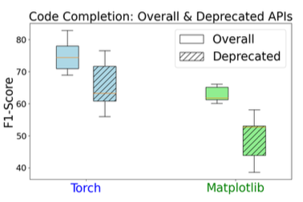
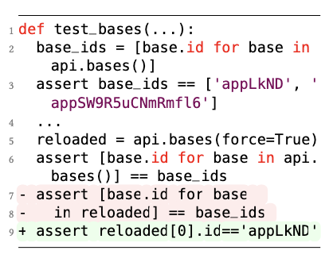
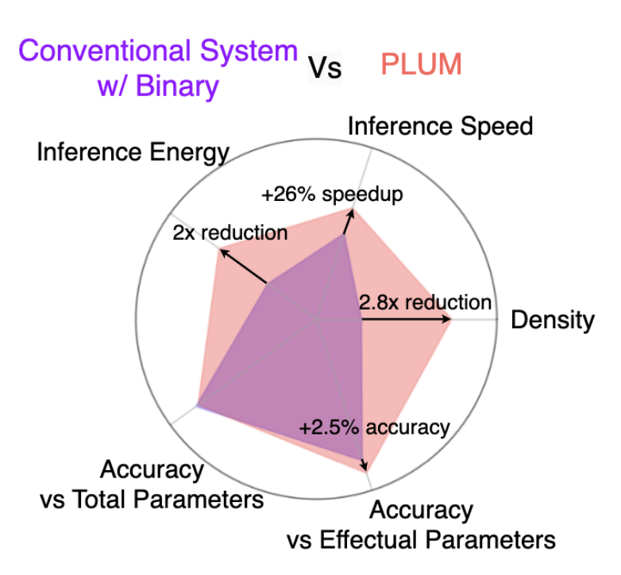
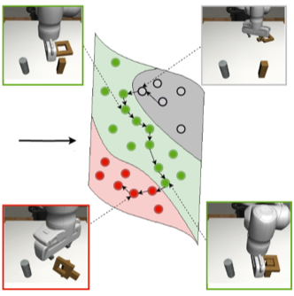
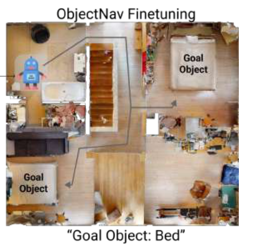
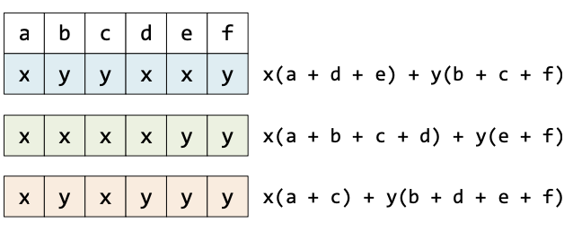
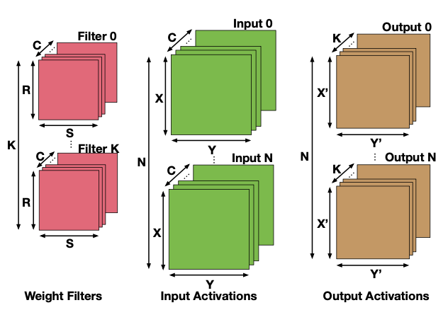
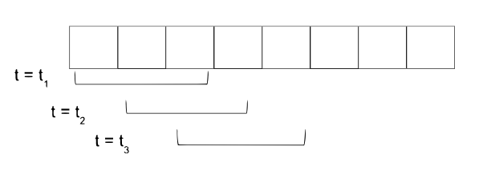

|
Sachit Kuhar
Hi there! I'm an AI researcher at AWS AI Labs, working on Large Language Models. Previously, I attended Georgia Tech where I was advised by Danfei Xu, and
before that I spent four wonderful years at IIT Guwahati as an undergrad.
Email |
Google Scholar |
LinkedIn
|
|
Research
|

|
LibEvolutionEval: A Benchmark and Study for Version-Specific Code Generation
[PDF]
[Website]
Sachit Kuhar, Wasi Uddin Ahmad, Zijian Wang, Nihal Jain, Haifeng Qian,
Baishakhi Ray, Murali Krishna Ramanathan, Xiaofei Ma, Anoop Deoras
Oral Presentation at NAACL (Main Conference) 2025
A benchmark analyzing code generation when libraries evolve across versions, highlighting challenges for LLM-based code completions.
BibTeX
@article{kuhar2024libevolutioneval,
title={LibEvolutionEval: A Benchmark and Study for Version-Specific Code Generation},
author={Kuhar, Sachit and Ahmad, Wasi Uddin and Wang, Zijian and Jain, Nihal and Qian, Haifeng and Ray, Baishakhi and Ramanathan, Murali Krishna and Ma, Xiaofei and Deoras, Anoop},
journal={arXiv preprint arXiv:2412.04478},
year={2024}
}
|
|

|
UTFix: Change Aware Unit Test Repairing using LLM
[PDF]
Shanto Rahman, Sachit Kuhar, Berk Cirisci, Pranav Garg, Shiqi Wang, Xiaofei Ma, Anoop Deoras, Baishakhi Ray
Oral Presentation at Object-oriented Programming, Systems, Languages, and Applications ( OOPSLA) 2025
A method that leverages LLMs to detect and repair unit tests in response to code changes, enhancing software robustness.
BibTeX
@inproceedings{rahman2025utfix,
title={UTFix: Change Aware Unit Test Repairing using LLM},
author={Rahman, Shanto and Kuhar, Sachit and Cirisci, Berk and Garg, Pranav and Wang, Shiqi and Ma, Xiaofei and Deoras, Anoop and Ray, Baishakhi},
booktitle={Proceedings of the OOPSLA},
year={2025},
address={Singapore}
}
|
|

|
PLUM: Improving Efficiency By Leveraging Repetition-Sparsity Trade-Off
[PDF]
[Website]
Sachit Kuhar, Yash Jain, Alexey Tumanov
Transactions on Machine Learning Research ( TMLR) 2024
Spotlight Talk at MLSys On-Device Intelligence 2023
Proposes a method to exploit weight repetition and structural sparsity in neural networks to achieve better efficiency.
BibTeX
@article{kuhar2024plum,
title={{PLUM}: Improving Inference Efficiency By Leveraging Repetition-Sparsity Trade-Off},
author={Kuhar, Sachit and Jain, Yash and Tumanov, Alexey},
journal={Transactions on Machine Learning Research},
year={2024},
url={https://openreview.net/forum?id=IEKtMMSblm}
}
|
|

|
Learning to Discern: Imitating Heterogeneous Human Demonstrations
[PDF]
Sachit Kuhar, Shuo Cheng, Shivang Chopra, Matthew Bronars, Danfei Xu
Conference on Robot Learning ( CoRL) 2023
Presents a method to handle mixed-quality offline demonstrations for imitation learning, improving policy performance.
BibTeX
@inproceedings{kuhar2023learning,
title={Learning to Discern: Imitating Heterogeneous Human Demonstrations with Preference and Representation Learning},
author={Kuhar, Sachit and Cheng, Shuo and Chopra, Shivang and Bronars, Matthew and Xu, Danfei},
booktitle={7th Annual Conference on Robot Learning (CoRL)},
year={2023},
url={https://openreview.net/forum?id=kOm3jWX8YN}
}
|
|

|
Offline Visual Representation Learning for Embodied Navigation
[PDF]
Karmesh, Ram, Arjun, Vincent, Sachit Kuhar, Dhruv Batra, Alexei Baevski, Oleksandr Maksymets
ICLR Reincarnating Reinforcement Learning 2023
Examines self-supervised learning approaches for visual encoders in embodied navigation tasks using offline datasets.
BibTeX
@inproceedings{yadav2023offline,
title={Offline Visual Representation Learning for Embodied Navigation},
author={Karmesh Yadav and Ram Ramrakhya and Arjun Majumdar and Vincent-Pierre Berges and Sachit Kuhar and Dhruv Batra and Alexei Baevski and Oleksandr Maksymets},
booktitle={Workshop on Reincarnating Reinforcement Learning at ICLR 2023},
year={2023},
url={https://openreview.net/forum?id=Spfbts_vNY}
}
|
|

|
SumMerge: Algorithm and Implementation for Weight Repetition-Aware DNN Inference
[PDF]
Rohan Prabhakar*, Sachit Kuhar*, Rohit Agrawal, Christopher Hughes, Christopher Fletcher
Oral Presentation at International Conference on Supercomputing ( ICS) 2021
Introduces an algorithm to accelerate DNN inference by exploiting weight repetition patterns, showing 2x improvement on Intel CPUs.
BibTeX
@inproceedings{prabhakar2021summerge,
title={Summerge: An efficient algorithm and implementation for weight repetition-aware dnn inference},
author={Prabhakar, Rohan Baskar and Kuhar, Sachit and Agrawal, Rohit and Hughes, Christopher J and Fletcher, Christopher W},
booktitle={Proceedings of the ACM International Conference on Supercomputing},
pages={279--290},
year={2021}
}
|
|

|
mRNA: Enabling Efficient Mapping Space Exploration for a Reconfiguration Neural Accelerator
[PDF]
Zhongyuan Zhao, Hyoukjun Kwon, Sachit Kuhar, Weiguang Sheng, Z Mao, Tushar Krishna
Oral Presentation at International Symposium on Performance Analysis of Systems and Software ( ISPASS) 2019
Proposes a design-space exploration methodology for mapping DNNs efficiently on a reconfigurable neural accelerator.
BibTeX
@inproceedings{zhao2019mrna,
title={mrna: Enabling efficient mapping space exploration for a reconfiguration neural accelerator},
author={Zhao, Zhongyuan and Kwon, Hyoukjun and Kuhar, Sachit and Sheng, Weiguang and Mao, Zhigang and Krishna, Tushar},
booktitle={2019 IEEE International Symposium on Performance Analysis of Systems and Software (ISPASS)},
pages={282--292},
year={2019},
organization={IEEE}
}
|
|

|
Deep Learning based Semi-Blind Tracking for Aging Wireless Communication Channels
[PDF]
Sachit Kuhar*, Achal Dave*, Ribhu Chopra
Springer Wireless Personal Communications ( WPC), 2021
Develops a novel neural approach to track changes in wireless channels, improving communication reliability over time.
BibTeX
@article{dave2021deep,
title={Deep learning based semi-blind tracking for aging wireless communication channels},
author={Dave, Achal and Kuhar, Sachit and Chopra, Ribhu},
journal={Wireless Personal Communications},
volume={119},
number={3},
pages={2695--2706},
year={2021},
publisher={Springer}
}
|
|